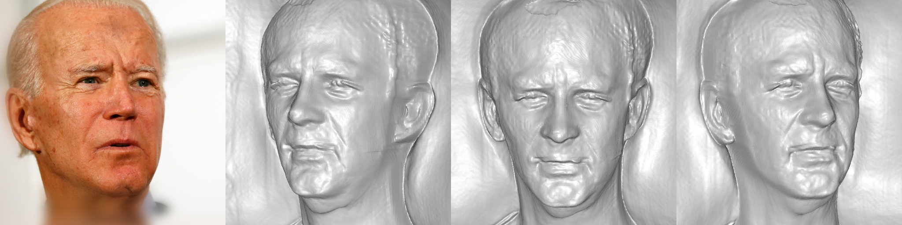
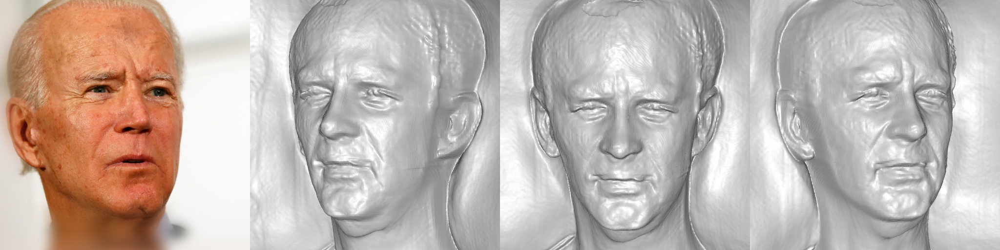

Image Inversion
For each row, we show the input image on the left, followed by multi-view reconstructions. You may hover over and slide the mouse to check the corresponding geometry. We also show the reconstruction video on the right.
We compare the results of our method with the pretrained method and the full fine-tuning method.
Similar to what we claimed in the main pdf, we show that personalization without LoRA (naive full-finetuning) can sometimes introduce artifacts, such as rendering floaters (1st, 2nd, and 3rd example) and facial texture/shape artifacts (4th example). Our method, on the other hand, is able to generate high-quality reconstructions with minimal artifacts.
|
||||||||||||||||||||||||||||||||||||||||||||||||||||||||||||||||||||||||||||||||||||


 
